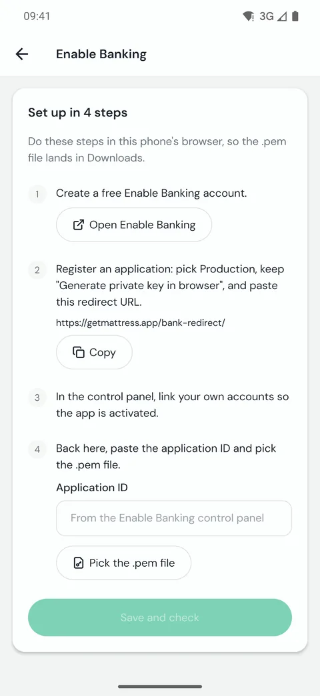

Create your Enable Banking app
A one-time setup of about ten minutes. After it, your banks sync on their own. Bank sync is part of Mattress Pro.
Why your own app
Mattress reads your bank through Enable Banking, a licensed open banking provider. There is no Mattress server in between: you create a free Enable Banking application that only reaches your own accounts, and its private key stays on your phone.
Brokers do not need this. Trade Republic, Trading 212 and Robinhood connect directly, under Add connection.
Before you start
Do these steps in your phone's browser, so the private key file lands in Downloads and the app can pick it. In Mattress, open Settings, then Bank connections, then Enable Banking app. The app shows the same 4 steps.

1. Create an Enable Banking account
Tap Open Enable Banking, or go to enablebanking.com, and sign up. It is free.
2. Register an application
In the Enable Banking control panel, register a new application:
- Pick Production.
- Keep Generate private key in browser selected.
-
Set the redirect URL to exactly
https://getmattress.app/bank-redirect/, with the slash at the end. The Copy button in the app copies it.
When you register it, the browser downloads a .pem file.
That is the private key. Keep it, and never share it.
3. Activate it with your own accounts
Still in the control panel, link your own bank accounts to the application. This activates it, restricted to the accounts you linked.
4. Add it to Mattress
- Paste the Application ID from the control panel.
- Tap Pick the .pem file and choose the file from step 2.
- Tap Save and check. It works means you are done.
The key was rejected means the ID and the file do not match: check the ID and pick the file again. If the app asks you to add the redirect URL, add it to the application in the control panel.
Connect a bank
- In Bank connections, tap Add connection, then A bank.
- Type the country's two letters, such as PT, and tap Find banks.
- Pick your bank. Its login page opens in the browser: log in there. The app opens again when you are done.
- Under Accounts to link, set Link to for each account: one you already have in Mattress, or a new one. Set Sync from to the first day you want.
- Tap Link these accounts. The first sync starts, and new records land in the review inbox.
Limits worth knowing
- Banks allow only a few syncs a day. Every sync counts: the ones in the background, the ones when you open the app, and every tap on Sync now. When the limit is reached, the app shows Next sync possible at and waits.
- Some banks allow very few requests a day. Trade Republic is one, so avoid tapping Sync now again and again.
- A Sync from far in the past makes a long first sync that uses more of the day's limit and may stop early.
- Your bank asks you to confirm access every few months. The app shows Reconnect by with the day. Tap Reconnect and your links are kept.
- Banks marked Beta, may be unreliable can fail more often.
- The key and the bank login are not in backups. After a restore, set up the Enable Banking app and reconnect your banks.